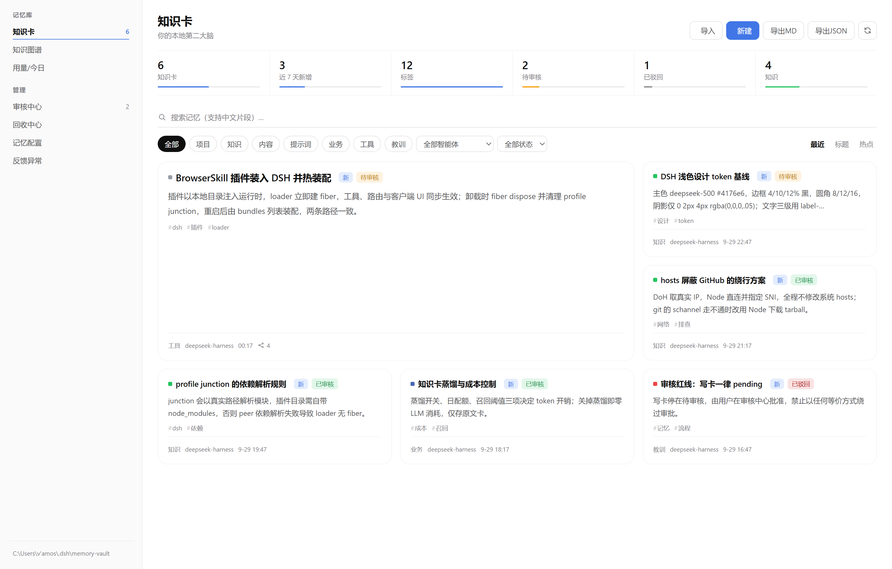
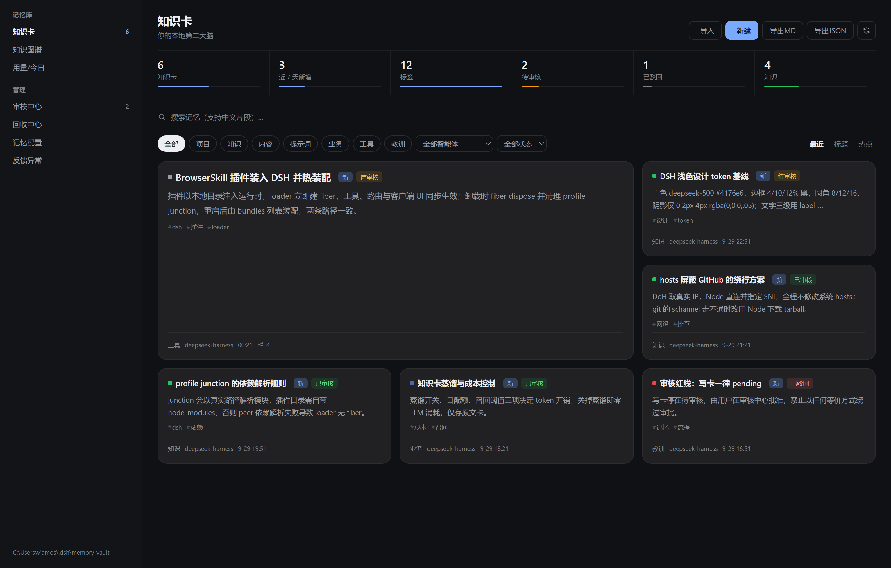
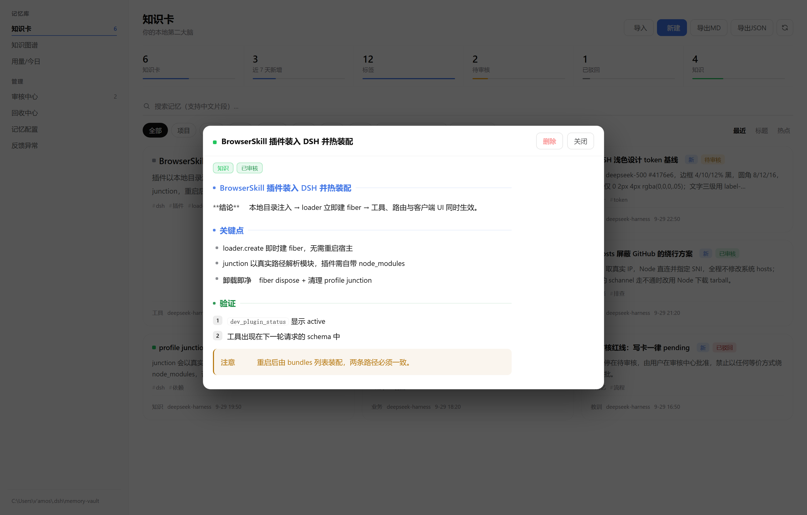
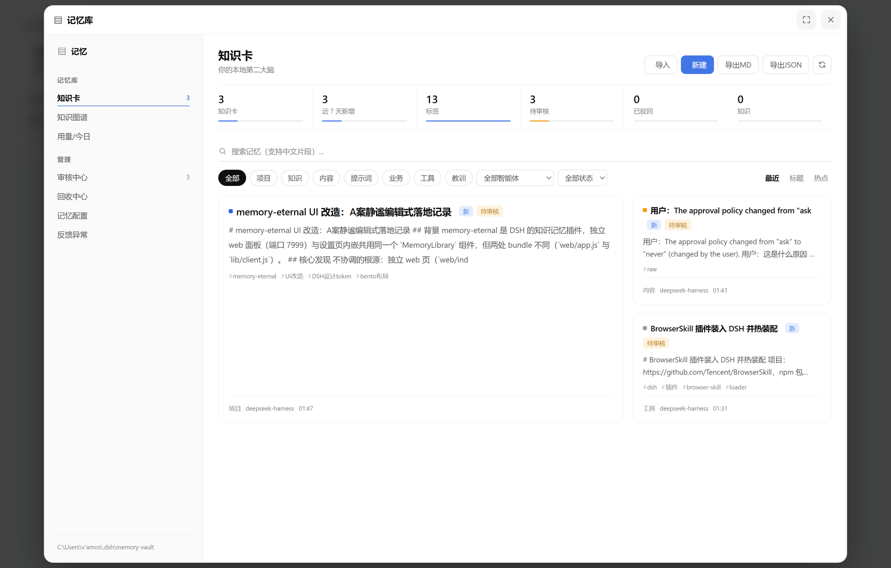
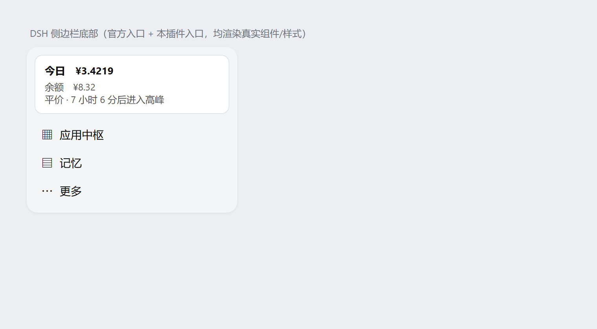

DeepSeek Harness 插件 · 界面衍生版
把 AI 的「第二大脑」界面重做到与 DeepSeek Harness 主界面同一种语言：细线、留白、克制的状态色。 本仓库是 EternalNight996/memory-eternal 的界面重构衍生版，原作者 EternalNight996，遵循 MIT License。只改客户端 UI 层，host 逻辑与数据格式未动。
| 文件 | 改动量 | 内容 |
|---|---|---|
src/client/index.tsx | +423 / −291 | 主界面与各面板的样式与结构 |
src/client/markdown.js | +24 / −22 | 正文排版去 emoji，改 CSS 色点/色条 |
web/index.html | +53 / −19 | 独立 web 页色板 → DSH 官方 token |
tests/markdown.test.mjs | +12 / −12 | 断言同步 |
构建产物同步重建：lib/client.js、web/app.js。单元测试 markdown 7/7、graph-lod 5/5 通过。


color-mix 与 label-primary-inverted 自适应


▤ + 36px 圆角行）dsh plugin --profile desktop add github:07vvvv/memory-eternal-ui-restyle
或下载 Release 附件解压后执行 node build.mjs 重建客户端产物。